RC SHERP Crawler
A radio-controlled crawler designed from scratch and loosely based on the SHERP ATV, the amphibious off-road vehicle with giant, soft, low-pressure tyres.
Everything is designed in Tinkercad, 3D printed in PETG and TPU, and driven by an ESP32 microcontroller. This page follows the build in date order, including what went wrong and how I fixed it. The community discussion is in the 4x4community.co.za build thread.
Where it's at
- Wheels on, one motor in: the body, wheels and first motor are fitted, and one side has driven.
- Belts being replaced: the 3D-printed belts stretched and slip, so real rubber GT2 belts are going in.
- Next: fit the second motor, get both sides driving, and do the first real drive test before deciding whether the motors need upgrading.
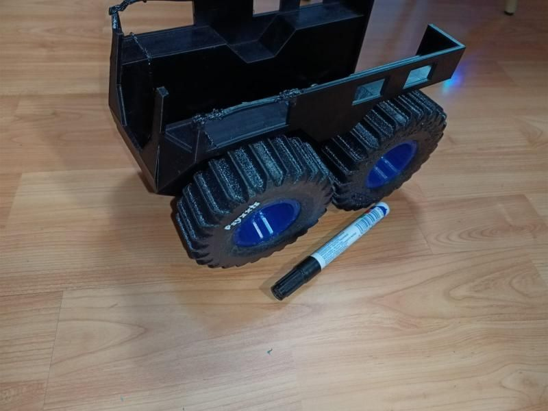
Why build one?
My son loves RC cars, but he gets bored of things quickly, so I wasn't about to spend on a proper one yet. I wanted something biggish, different and fully customisable, where I could change the power, the controls or the body whenever I liked instead of being locked into store-bought parts. That meant 3D printing and DIY electronics.
I chose the SHERP after seeing one in real life. DCD Protected Mobility has one, which I first saw at an outdoor expo and which has been lent out for search-and-rescue missions. I kept the real SHERP's core principles:
- Skid steering. There's no steering linkage; each side is driven at a different speed.
- Belt- or chain-driven solid axles. Front and rear wheels on each side are linked.
- No suspension. The soft tyres do the job.
- Low centre of gravity.
I thought the insides would be easy: print a few connections, shove in some motors and a battery. They weren't. Motor size depended on weight, weight depended on the body, the body depended on the wheels, and the wheels depended on the insides. Everything depended on everything else.
Build log
1 September: first motor test
To get moving I bought a cheap test motor with a built-in reduction: an N20 micro gearmotor, 6 V, 1:298, 33 RPM, 1.5 kg·cm stall torque. It's cheap, tiny and a standard size, so I can swap it for something faster or stronger later without redesigning everything.
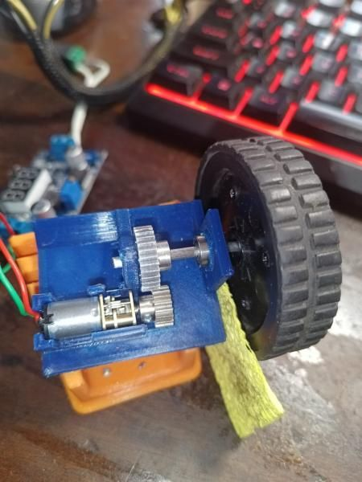
3 September: scale, wheels and gearing
Scale: 1:15, then 1:20. I originally wanted 1:15, but the parts were too big for my printer bed, so I redesigned at 1:20. I researched the real vehicle's clearance, wheel size and wheelbase and scaled them down, which gave wheels of 90 mm × 30 mm. The roof ended up slightly lower than scale because of printer limits, but I kept the wheels and main body as close to scale as I could.
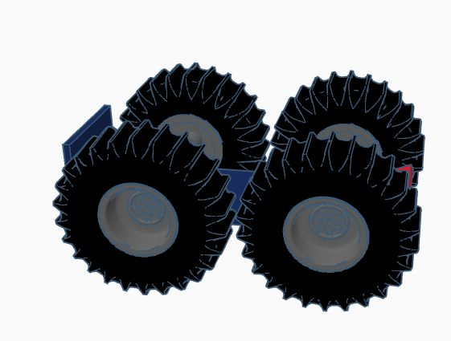
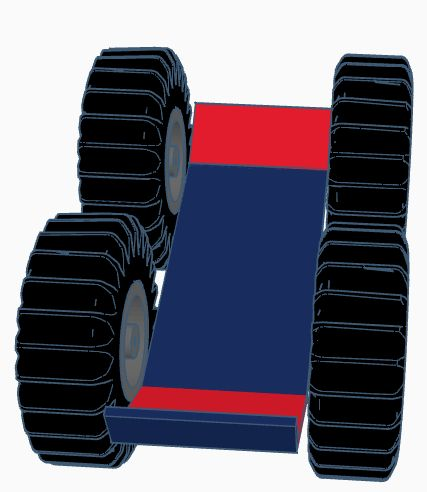
Drivetrain layout. I played with a few ideas for copying the real drivetrain, but the real SHERP uses clutches and brakes to steer, which wasn't going to work at this scale. So I settled on two motors, one per side.
Gearing. My first attempt was 3D-printed gears. They looked great on paper and were terrible in real life at this tiny size.
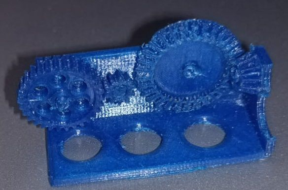
I switched to bought gears: Tamiya Module 0.6, 18T on the motor driving 29T on the axle, with a pulley linking to the other axle. I'd been aiming for 3:1, but this was what the shop had.
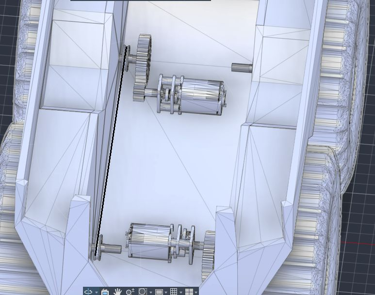
On paper that gave about 3× the torque needed, roughly 1 kg of pulling force and about 0.5 km/h top speed. The axles are 3.18 mm (1/8") piano wire with two bearings per axle. The estimated weight at this point was about 700 g.
Community input: a member pointed out that the motor's torque figure is interpolated rather than measured, and that I should allow about 30% loss through the gears and belts. Even so, grip would run out before the motor did. Another member warned that 1:20 might be too small for proper off-roading clearance, which turned out to be right.
4 September: how to link the axles
A forum member suggested a clever layout for an amphibious build. The motors sit low inside the body and drive belts up to a shaft near the roof, which then drives an outside belt down to both wheels with a tensioner. The only holes through the hull would then be high above the waterline.
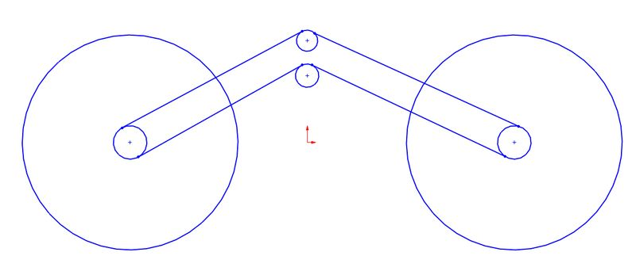
Someone also suggested four motors, one per wheel. I considered it, but the motor drivers I know handle two motors at most, and all four would need to run at exactly the same speed or the wheels would fight each other.
Decision: a 6 mm GT2 belt was the narrowest I could easily get, which made the high-mounted layout messy, and adding a tensioner was tricky. So I went with a direct fit instead: a 232 mm, 6 mm GT2 belt on 20T pulleys with 3.17 mm bores. No single shop had every part, so I bought them as I passed through each area.
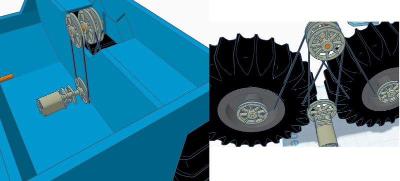
7 September: TPU tyres
I printed the first TPU tyres. The idea is that they deform a bit under the vehicle's weight (estimated at about 1.2 kg by then) and act as the suspension. I'm not sold on the beadlock rims yet; a future version may drop them.
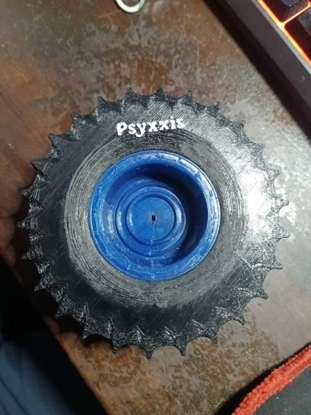
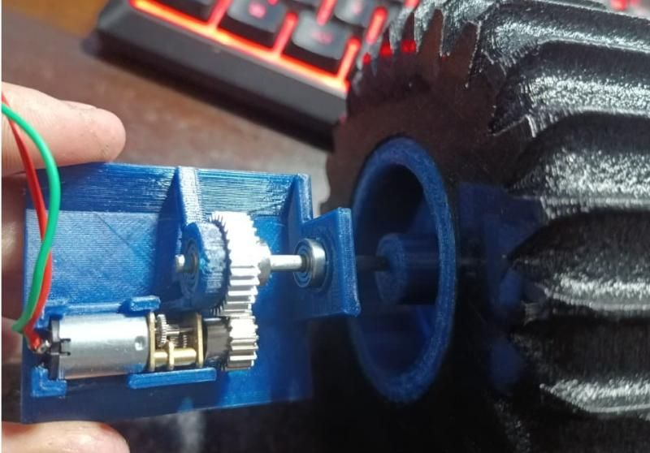
10 September: the weight problem, and back to 1:15
While working out filament quantities for costing, I realised how heavy this had become:
- Going back to 1:15 (because everything at 1:20 was just too tight inside) added about 800 g.
- The wheels and rims alone weighed 532 g.
- I had sized the motors for 400 g, and the vehicle was now around 1.2 kg. The N20s would stall at maximum load.
My options were:
- Cut weight. This was unlikely to get far; maybe 100 g from thinner walls and less infill.
- Use RC-style torque motors. These have no built-in gearbox, so I'd need another reduction stage, and I had no idea where they'd fit.
- Upgrade slightly to a 25 mm planetary gearmotor, 77 RPM, 6 V. It would be pushing the limits, but it should fit mounted perpendicular and meets my torque and speed targets.
Either upgrade also needs a bigger motor driver.
A forum member suggested putting the motors up in the side "sponson" boxes so the heavier batteries could lie flat on the floor, lowering the centre of gravity. He also suggested making some inner areas solid, since most of a print's weight is in the surface layers.
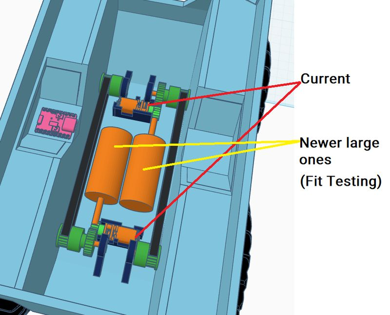
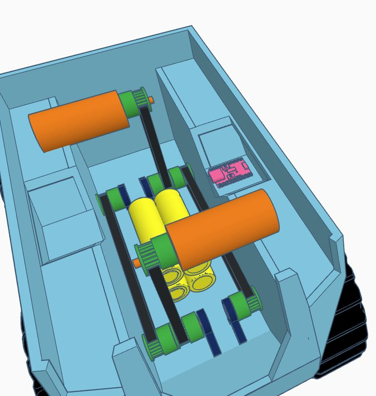
11 September: inside belts and a shell mockup
A refinement came up on the forum: run the belts inside the body with an idler pulley. That keeps the floor clear for the batteries and makes it easier to use a standard-length belt. Belts on the outside would have forced the wheels too far out and ruined the shape. The batteries won't need to come out, because I'm building in a charger.
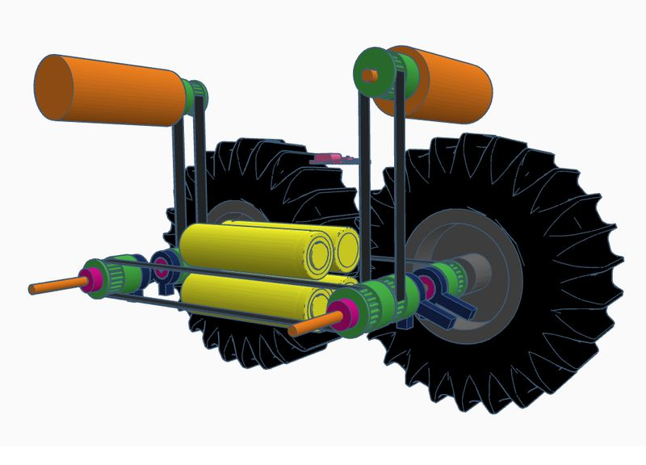
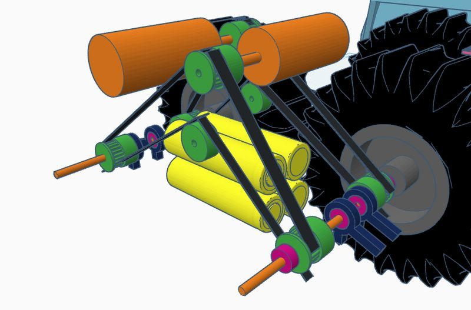
I also printed a mockup of the shell for weight planning and to try ideas in real life. Proper GT2 belts were on order from China.
16 September: final wheels
TPU prints slowly, so each tyre took about 15 hours. A few didn't come out perfectly, but they're good enough for a prototype.
- R29 per tyre and R7 per rim: R144 for the full set of four
- 328 g for all four, down from 532 g for the first versions
TPU settings that worked: 8% infill, retraction off, 25 mm/s, 100% cooling fan. The rim bore is 57 mm rather than the scale-accurate 42.3 mm, because that's what makes assembly practical.
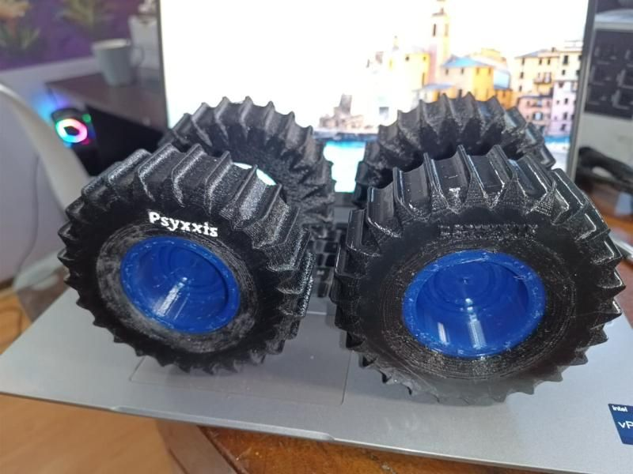
20 September: body, components board and first belt test
Thin-shell body. I printed the body as a thin shell. It developed some cracks, but it's the prototype body and I'll use it until it fails.
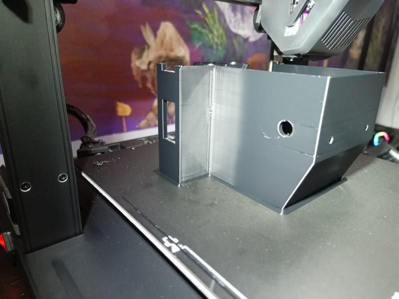
Removable components board. I cut out a section in the middle of the body so the components board prints separately. If I want to change the layout, I only reprint that board instead of the whole body.
Parts arrive, and the axles don't fit. The cheap gears and belts from China turned out to be surprisingly good quality. But the gears came with 3 mm bores and my axles are 3.18 mm. Drilling out the gears didn't work, so I sanded the axles down instead.
Printed TPU belts. I printed the belts in TPU at exactly 296 mm, the right length for my 128 mm axle spacing with 20T pulleys. For this first test all the wheels are joined to one motor just to prove the belt run. In the final build, this motor will only drive the right-hand wheels, and a second motor at the bottom will drive the left.
Next steps at this point were to cut a keyway into the axles so the wheels lock on, mount the bearings in the body, and fit the components board. I'm sticking with the N20s for now because I already have them. If they turn out too weak, I'll fit the larger motors then.
Printer problems. Around this time, big prints (including the body) started showing horizontal cracks every 13–15 mm, bad enough to snap supports and force me to abort an 18-hour print. My old Anet E10 was dying anyway, so I replaced it with a Creality Ender 3 V3 SE. The cracks came back even on a plain calibration cube, which pointed at the slicer rather than the printer. The cause was Z-hop combined with retract-on-layer-change in Creality Print. Turning both off (and slicing in Cura) fixed it.
25 September: wheels on, motor in
Wheels are on and the motor is fitted on one side.
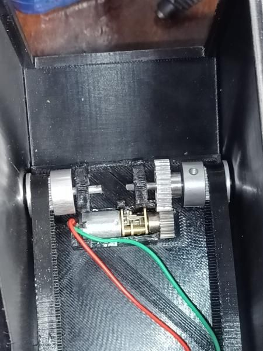
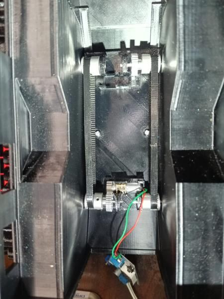
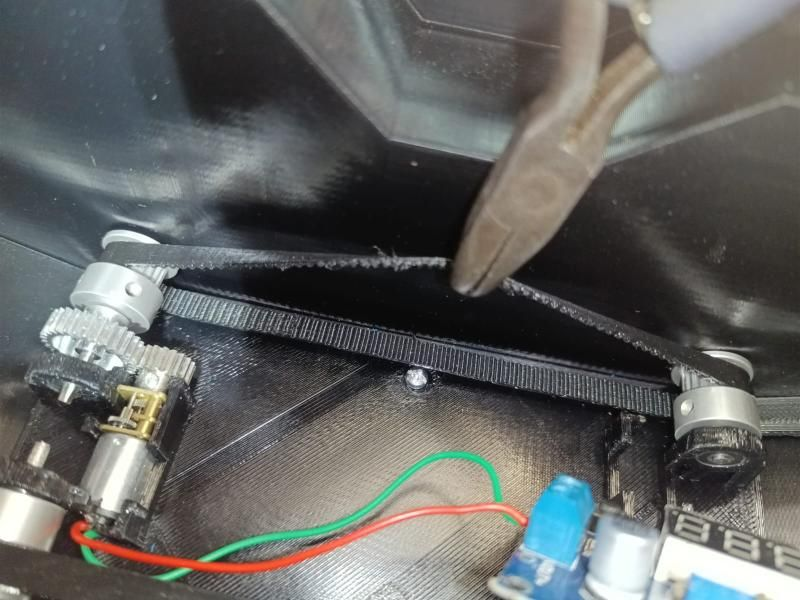
Swappable build plate. I made a swappable plate at the bottom so I can change the motor seating without reprinting the whole model. I forgot a support and it didn't fit, but the test still showed up some defects worth fixing.
The belt problem. The TPU belt stretched and now jumps teeth on the pulley, so for now it's "1.3-wheel drive". Real GT2 belts have fibreglass or Kevlar cords inside to stop them stretching, and TPU doesn't. An idler probably won't help, because the TPU just keeps stretching.
Fix: I bought a roughly 900 mm real rubber GT2 belt from China for about R20. I'll cut and join it into two 296 mm loops, one per side, and keep the printed belts as spares.
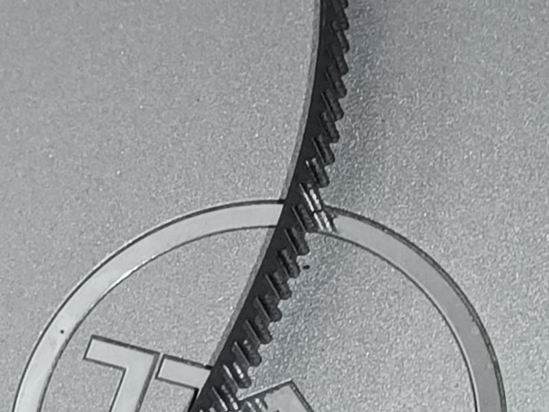
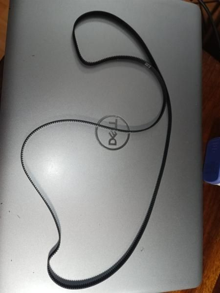
Electronics
| Part | Choice | Notes |
|---|---|---|
| Controller | ESP32-C3 | Runs the tank mixing and motor control |
| Transmitter | Second ESP32-C3 | Handheld unit, linked over ESP-NOW |
| Motor driver | DRV8833 dual driver | R49; 1.2 A continuous / 2 A peak per channel |
| Battery | 4 × 18650 in 2S2P | Built-in USB-C 2S charger/BMS, so the cells never need removing |
| ESP32 power | Buck converter | Steps the battery voltage down |
Skid-steer mixing is done in code:
left = throttle + steering
right = throttle - steeringThe motor question (still open)
The crawler currently runs N20 33 RPM 6 V motors. They're light (about 9 g each), run cool and draw only 0.2 A at stall, but they were sized for a 400 g vehicle.
| Option | For | Against |
|---|---|---|
| Stay on N20 33 RPM | Already fitted, cheap | Thin torque margin at about 1.1–1.2 kg; slow |
| Pololu HP N20 (150:1 / 380:1) | Same size, drop-in | About R1,000–1,300 landed after import |
| 25 mm planetary / JGA25-370, 77 RPM | 6.2 kg·cm stall; local stock | 89 g each; 1.8 A stall is near the DRV8833's limit; needs new mounts |
| JGA25-370 130 RPM, Tamiya 540, Reedy Radon 2 550 | Evaluated | Speed, size, weight or fitting drawbacks |
The plan is to see how the N20s actually perform once both sides are driving, then decide.
What it costs
My parts plan, with actual prices filled in where I have them:
| Item | Planned | Actual so far |
|---|---|---|
| 2 × N20 33 RPM motors | R180 | R196 |
| Gear sets | R200 | |
| Belts | R69 | + about R20 for the rubber GT2 belt |
| 2 × ESP32-C3 | R140 | |
| Motor driver | R70 | R49 (DRV8833) |
| Driver board | R70 | |
| Bearings | R140 | |
| Piano wire | R80 | |
| Nuts and bolts | R100 | |
| Battery pack | R200 | |
| Filament | R600 | R144 so far (wheels) |
| Total | About R1,880 |
Not included: the handheld remote (about R500), a motor upgrade (closer to R800 for the pair locally), and the Ender 3 V3 SE, which replaced a dying printer and is a workshop tool.
For comparison, a forum member estimated at least R5,000 for a SHERP-style build using decent off-the-shelf motors, ESCs, servos and radio gear. The real cost is my time, and I'm happy to give it. I couldn't buy this out of the box, and even if I could, I wouldn't.
Lessons so far
- Weight drives everything. Re-check the motor torque every time the weight estimate changes; mine went from 400 g to 1.2 kg.
- Printer size shouldn't dictate scale. I went 1:15 → 1:20 → 1:15 because 1:20 was too cramped inside.
- Printed gears don't work at this size. Buy them.
- Printed TPU belts stretch. Use reinforced rubber GT2 belts.
- Check bore sizes. 3 mm gears on 3.18 mm axles cost me an afternoon of sanding.
- Design for swapping. The separate components board and bottom plate mean small changes don't need a full reprint.
- Slicer settings can look like hardware faults. Z-hop plus retract-on-layer-change caused cracks I blamed on the printer.
Next steps
- Join the rubber GT2 belts and refit
- Fit the second motor and get both sides driving
- Cut keyways into the axles and mount the bearings in the body
- Design printed dust caps for the wheel hubs
- First real drive test, then decide on the motor upgrade